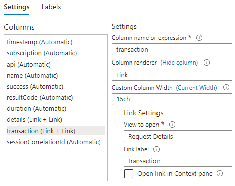

Azure Workbook Tips & Tricks

If you use Azure, you most likely use Application Insights for logging. You can use a dashboard to visualize your logging and gain better insights, but dashboards come with some limitations. For more flexibility Azure has workbooks.
In this blog post I’ll share some tips & tricks that I’ve gathered over the years. As a sample, we’ll create a workbook that shows information about requests sent to an API Management instance.
- Construct a query
- Create reusable query
- Create Workbook
- Parameters
- Table
- Totals (tiles)
- Master-detail Table
- Save Workbook
- Conclusion
Construct a query
When you want to display data from Application Insights on a dashboard or workbook, you’ll need to create a query. Azure uses the Kusto Query Language for this.
Creating such a query can be daunting if you’re unfamiliar with the syntax. I always like to start by constructing an initial query through the transaction search screen of Application Insights.
For this, open your Application Insights instance in the portal and go to Transaction Search. At the top you’ll see ‘pills’ that you can use to filter the data. By default, it will show logging from the last 24 hours for all event types. In our case, we’re interested in requests, so unselect all event types except ‘Request’.
We can add extra filters by adding new pills. You can then select the property on which to filter and the value(s).
To filter on requests from our API Management instance, first select the ‘Service ID’ property and then the name of your API Management instance.
I also want to be able to filter on requests from specific APIs. Add another pill, select ‘API Name’ as the property and select the APIs on which to filter.
The result should look similar to the image below.
By clicking on ‘View in Logs’ you’ll go to the Logs screen where the query we’ve just constructed is loaded. It should look like the query below.
union isfuzzy=true requests
| where timestamp > datetime("2023-02-24T11:12:00.662Z") and timestamp < datetime("2023-02-25T11:12:00.662Z")
| where customDimensions["Service ID"] in ("apim-robo-test")
| where customDimensions["API Name"] in ("bar", "qux")
| order by timestamp desc
| take 100
The query has the filters specified in the Transaction Search screen as where clauses. It’s also sorting the results on the timestamp and only showing the first 100 records.
We’ll optimize this query in a bit, but first have a look at the left of the Logs screen. You can find a list of tables you can query on and the columns of each table. Here’s part of the requests table for example.
The timestamp property is a property we can directly use in our queries because it’s a column of the requests table. The Service ID and API Name are not default columns in the requests table because they are specific to API Management. These are stored in the customDimensions property and can be accessed with the syntax customDimensions["Service ID"] and customDimensions["API Name"].
When you specify your own custom properties to log from your application, you’ll find them in this customDimensions property.
Create reusable query
We’ll be reusing the same query in different parts of our workbook, so we’re going to make a function. First, we’ll cleanup the previously generated query to look like this:
requests
| where customDimensions["Service ID"] == "apim-robo-test"
| extend subscription = tostring(customDimensions["Subscription Name"])
, api = tostring(customDimensions["API Name"])
, sessionCorrelationId = tostring(customDimensions["Request-Session-Correlation-Id"])
We’ve made the following changes:
- The
union isfuzzy=truepart is useful when querying multiple even types. Because we’re only querying requests we’ve removed it. - The query screen provides a ‘Time range’ pill that can be used to specify a time range to filter on. We will provide a similar filter in our workbook. So, the where clause on
timestampis removed. - We’ll only query on a single API Management instance, so the ‘in’ filter has become an ‘equals’.
- We’ll be adding the filter on API name in our workbook. So, it’s removed for now.
- We extend the query results with the following properties from the custom dimensions array. We also convert them to strings, so they’re easier to work with.
- Subscription Name: the name of the subscription that was used to call an API. This will make it possible to identify who performed a request.
- API Name: this is the name of the API that was called.
- Request-Session-Correlation-Id: this is a custom dimension I’ve added to every request so I can correlate all requests from a specific session. We’ll use it when creating a master-detail table.
- Sorting is up to the queries using the function, so
| order by timestamp desccan be removed. - Lastly, we can remove the
| take 100to show more results.
To save the query as a function, choose ‘Save > Save as function’ and give it a name like ‘ApimRequests’.
When the function is saved, you can use it in a query like this:
Because we’ve extended the results in the function with api, we don’t need to use the customDimensions["API Name"] syntax in our query.
Create Workbook
Now that we have our query, we can start creating our workbook. Open your Application Insights instance and go to Workbooks. Azure already provides several workbooks that you can use and customize, but we’ll start from scratch. Click on Empty (A completely empty workbook). A new empty workbook opens.
When you click on Add, you’ll see that you can add different items to the workbook. We’ll focus on parameters and queries in this workbook.
Parameters
The first thing we’ll do is add a couple of parameters. These will allow us to filter on the data that will be displayed.
Click on ‘Add > Add parameters’ to add a parameters section to the top of the workbook.
Time Range Parameter
We’ll want to filter on a specific time range, so click on the ‘Add Parameter’ button. The New Parameter screen opens to the side. Enter the parameter name ‘Time’, select ‘Time range picker’ as the parameter type and make it required.
Click Save to add the parameter.
Subscription Parameter (drop down from logs)
When calling API Management, we need to use a subscription for authentication. I want to be able filter on this subscription to see who performed which requests.
Click on the ‘Add Parameter’ button. Enter the parameter name ‘Subscription’, select ‘Drop down’ as the parameter type, check the ‘Allow multiple selections’ box and select ‘Query’ as the source of the data.
Enter the following query. As you can see, we’re using the function that we’ve created earlier.
ApimRequests
| distinct subscription
| sort by subscription asc
If you want to filter the results in your parameter based on the selected time in the Time parameter, select Time in the Time Range drop down.
To test the query, click the Run Query button.
You might have to select a time range in the Time parameter first for the query to work.
The New Parameter screen should look like this.
NOTE: if you scroll down in the New Parameter window, you’ll see how you can use this parameter in a query.
Click Save to add the parameter.
Api Parameter (drop down from logs)
As mentioned before, we also want to filter on the API that was called. As an extra requirement, I want to filter the list of APIs based on the selected subscription(s) from Subscription parameter.
Click on the ‘Add Parameter’ button. Enter the parameter name ‘Api’, select ‘Drop down’ as the parameter type, check the ‘Allow multiple selections’ box and select ‘Query’ as the source of the data.
Enter the following query and select Time as the Time Range.
let subscriptionFilter = dynamic([{Subscription}]);
ApimRequests
| where array_length(subscriptionFilter) == 0 or subscription in (subscriptionFilter)
| distinct api
| sort by api asc
As you can see, the query is a bit more complicated.
- The
let subscriptionFilter = dynamic([{Subscription}]);line will create an array of selected subscriptions based on the Subscription parameter. If no subscription is selected, the array is empty. - The filter
| where array_length(subscriptionFilter) == 0 or subscription in (subscriptionFilter)will show all APIs if no subscription is selected or APIs with requests that have a matching subscription if one or more are selected in the Subscription filter.
The New Parameter screen should look like this.
Run the query to test if it works. Click Save to add the parameter.
Success parameter (drop down from JSON)
You can also use a static list to populate a drop down filter. We’ll add another parameter to filter on successful and/or failed requests.
Click on the ‘Add Parameter’ button. Enter the parameter name ‘Success’, select ‘Drop down’ as the parameter type. The ‘Allow multiple selections’ checkbox can be left unchecked.
Select ‘JSON’ as the source of the data. In the JSON Input we need to add an array of values and labels. See the example below.
[
{ "value": "true", "label": "yes"},
{ "value": "false", "label": "no"}
]
We’ll see the items ‘yes’ and ‘no’ in the drop down list. These correspond to true and false respectively.
The New Parameter screen should look like this.
Click Save to add the parameter.
Now that we’ve added our parameters, click the ‘Done Editing’ button in the ‘Editing parameters item’ section. The result should look something like this.
Table
The next step is to add a table that shows the requests. Choose ‘Add > Add query’.
To filter the results in the table based on the selected time range of the previously created Time parameter, we can select the Time parameter in the Time Range drop down. Set the Visualization to Grid to display the results as a table.
Now add the following query.
let subscriptionFilter = dynamic([{Subscription}]);
let apiFilter = dynamic([{Api}]);
let successFilter = '{Success}';
ApimRequests
| where array_length(subscriptionFilter) == 0 or subscription in (subscriptionFilter)
| where array_length(apiFilter) == 0 or api in (apiFilter)
| where isempty(successFilter) or success == tobool(successFilter)
| project timestamp
, subscription
, api
, name
, success
, resultCode
, duration = strcat(round(duration, 1), " ms")
, details = itemId
, transaction = itemId
, sessionCorrelationId
| order by timestamp desc
The subscription and api filters are like the one in the query of the Api parameter.
The Success parameter was not multiselect, so let successFilter = '{Success}'; will be empty if nothing is selected, true if yes is selected and false if no is selected. With the filter | where isempty(successFilter) or success == tobool(successFilter) we either show all request or the requests that were (un)successful.
With the project keyword we specify a list of columns to display in the table. The itemId is displayed twice in both the details and transaction column. We’ll use these further on to create links to the request details.
The query is executed when you click the Run Query button. You can filter the data by changing the values of the parameters. For example, select ‘no’ in the Success parameter to show all failed requests.
You can configure more settings in the Advanced Settings tab. I’ve set the chart title to ‘Requests’. I also like to check the ‘Show filter field above grid or tiles’ box. This will show a filter input field above the table. It can be used to further filter the results as shown below.

Request Details in Context Pane
To show more information about a request, we can change the details column to show a link that opens the request details to the side.
Follow these steps:
- Click on the ‘Column Settings’ button in the ‘Settings’ tab and select the details column
- Select Link in the ‘Column renderer’ drop down
- Enter ‘11ch’ as the ‘Custom Column Width’
- Select ‘Request Details’ in the ‘View to open’ drop down
- Enter ‘details’ as the ‘Link label’
- Check the ‘Open link in Context pane’ box

Choose ‘Save and Close’ to see the results.
When you click on a details link, a context pane opens to the right showing the request properties. See the example below.
End-to-end Transaction Details
To show the end-to-end transaction details of a request, we can change the transaction column to show a link that opens the end-to-end-transaction details.
Follow these steps:
- Open the column settings again and select the transaction column
- Select Link in the ‘Column renderer’ drop down
- Enter ‘15ch’ as the ‘Custom Column Width’
- Select ‘Request Details’ in the ‘View to open’ drop down
- Enter ‘transaction’ as the ‘Link label’
- Keep the ‘Open link in Context pane’ unchecked

Choose ‘Save and Close’ to see the results.
When you click on a transaction link, the end-to-end transaction screen is opened. See the example below.
Totals (Tiles)
Besides tables you can also use other visualizations to display your query results. One I like to use is tiles. You can use it to for instance show the total number of requests, failures and errors per API. See the example below.
Start by adding another query to the workbook. Select Time as the Time Range, Tiles as the Visualization and Tiny as the Size.
Add the following query.
ApimRequests
| summarize
requests=strcat('Total # of requests: ', count()),
failures=strcat('Total # of failures: ', countif(success==false)),
errors=countif(toint(resultCode)>=500)
by api
This query groups the results by api and counts all requests, all failed requests and all requests with result code >= 500. To clarify what the different numbers are, I’ve included a bit of text in the results.
If you run the query, you’ll notice that it doesn’t quite look the same as the example above. We need to customize the tile.
Choose Tile Settings. The api is already the title and the errors are displayed as the big number on the left.
To add the total number of requests. Select the Subtitle field and select requests as the column to use. To add the total number of failures. Select the Bottom field and select failures as the column to use.
You can also configure on what property to order the results. Select api as the Sort Criteria under Sort Settings and Ascending as the Sort Order.
The Tile Settings screen should look like this.
Choose ‘Save and Close’.
We can add a title to the chart to clarify what is displayed. Go to Advanced Settings and set the chart title to Total # of errors per API (status code >=500).
I usually display the totals above a table. You can move the Tiles section above the table by choosing ‘Move > Move up’.
Master-detail Table
Tables and other items provide the option to select data. We can use that selection as a filter in other items.
As an example, we’ll create a master-detail table. When a request in the master table is selected, all requests that have the same session correlation id will be displayed in the detail table. See the example below.
Export Selection from Master Table
To start, Edit the current Requests table. Go to Advanced Settings and check the ‘When items are selected, export parameters’ box.
Click on Add parameter. Enter sessionCorrelationId as the field to export. Enter SelectedSessionCorrelationId as the parameter name.
Choose Save. It should look like this.
To reduce the amount of scrolling, I’ve changed the table size from medium to small in the settings.
Choose Done Editing on the editing query item.
Add Detail Table
Choose ‘Add > Add query’ to add another table. Select Time as the Time Range and Grid as Visualization.
Add the following query.
ApimRequests
| where sessionCorrelationId == '{SelectedSessionCorrelationId}'
| project timestamp
, subscription
, api
, name
, success
, resultCode
, duration = strcat(round(duration, 1), " ms")
, details = itemId
, transaction = itemId
| order by timestamp desc
This query looks like the previous one, but only filters on the sessionCorrelationId column using the exported parameter of the master table.
You can customize the columns again, similar to the master table. I also like to add a chart title in which I display the selected value. You can update the chart title in the Advanced Settings with: Requests for session: {SelectedSessionCorrelationId}.
Show Detail Table on Selection
If you don’t select an item in the master table. You’ll see the message below in place of the details table.
If you don’t like this, you can make the detail table hide when no row is selected in the master table.
Open the Advanced Settings and check the ‘Make this item conditionally visible’. Choose Add Condition. Enter SelectedSessionCorrelationId as the Parameter name and select ‘is not equal to’ in the Comparison drop down. Leave the Parameter value input empty.
With this the details table is only shown when the SelectedSessionCorrelationId has a value, which it will have if a row is selected in the master table.
Save Workbook
Once you’re done editing the workbook you can choose ‘Done Editing’. Then click the Save button. Enter a title in the Save As window and select the correct subscription, resource group & location. Choose Apply and the workbook is saved.
Note that parameter selections are also saved. Meaning, if you’re filtering on for example success == no and choose Save, this selection will be saved. Whenever you or another user opens the workbook, this selection will be pre-selected.
Here are links to the exported workbook and shared function:
In my blog post Deploy Azure Workbook and App Insights Function I show you how to deploy this workbook using Bicep and the Azure CLI.
Conclusion
As you can see, there’s a lot you can do with workbooks, and we’ve only scratched the surface. See these links for more information.